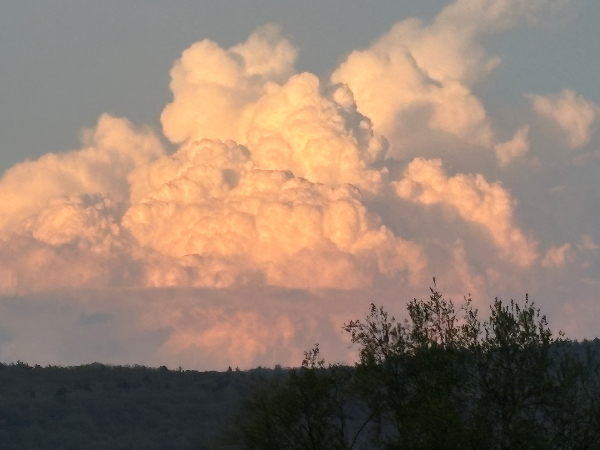

The image on the right is a photo of a cumulonimbus cloud approaching the Amherst area. Cumulonimbus clouds typically carry rain, hail, and can cause heavy winds and severe weather. They are characterized by their towering appearance, and are usually dark and gray. The photo on the right is an example of a rare waterless one and is brighter than usual.
Most people are familiar with the orange hues of a nice sunset, but many people don't understand the science behind them. During the day, the sky is blue because when sunlight reaches the Earth, gases and particles scatter the other colors, leaving only blue wavelengths for us to see. But when the sun is setting, it hits the Earth's atmopshere at a new angle, allowing for orange wavelengths to arrive and create the beauty of a sunset.
